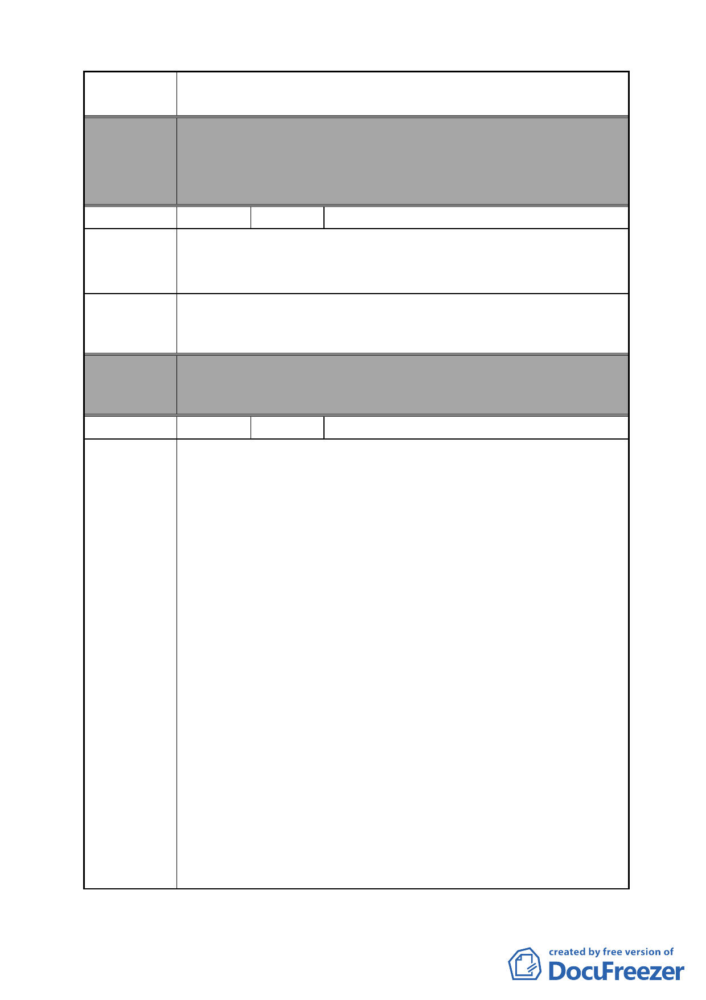

案 名 變更臺北市南港區鐵路地下化沿線土地主要計畫案
委員會
決議
編號
陳情理由
建議辦法
本案除文字誤繕應再作修正外，其餘依市府本次會議所送修
正計畫書內容通過。
（市府本次會議所送修正計畫書，本案將不拓寬昆陽街，逕
依現行規定辦理）
14 陳情人 陳鴻
市政府予開發徵收房屋及土地，未召開公聽、說明會，傾聽
住民意見，等同地痞流氓，罔顧住民生計，剝削住民財產，
非民主國家之政府所為。
召開公聽說明會。
委員會 本案除文字誤繕應再作修正外，其餘依市府本次會議所送修
決議 正計畫書內容通過。
編號
陳情理由
15 陳情人 闕世洋
徵收，若是為了達到公益，而侵害人民財產權利，則須符合
比例原則。
先前昆陽街曾經討論過要拓寬事宜，是因為當時昆陽街有平
交道阻礙交通造成不便，如今昆陽街在鐵路地下化之後，塞
車的狀況已不復見，因此昆陽街實沒有拓寬之必要性。
在未來捷運板南線延伸到南港車站之後，至南港展覽館昆陽
站、音樂中心或搭乘三鐵之人車潮將順移，昆陽站已喪失轉
運功能，屆時人、車流量將會比現況減少。而未來忠孝東路
跟南港路 3 段之間，除了有 20 公尺寬的東新街、昆陽街，還
會增加 3 條道路，已足夠人車使用。因此昆陽街實沒有拓寬
之必要性。
昆陽街實在是沒有拓寬的必要性，若以此來侵害人民的財產
權利，已違反了比例原則。
本次計畫規劃上是有問題的，如果要拓寬昆陽街西側，道路
根本就切不直，越靠近捷運，道路反而越窄。參照本次計畫
的計畫圖而實際到現場可以發現，拓寬昆陽街西側整排是到
昆陽街 112 號為止，所以順著 15 公尺寬昆陽街走路或開車，
快要到捷運站時，道路反而突然縮小，會撞到昆陽街 116 號跟
忠孝東路 449 號，就算連這兩間都退 5 公尺，那麼接下來仍
會撞到捷運的大排氣口。所以若是依照本次計畫拓寬昆陽街
西側，根本無法得到道路拓寬的效益。
- 27 -